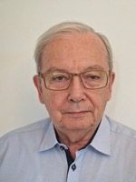

Rozwiąż problem osadu na zawsze. Bez szokowego obciążenia dla budżetu gminy.
Polska technologia HTC dla oczyszczalni ścieków „pod klucz”. Przekształcamy odpady w energię i zmniejszamy ich objętość 4-krotnie. Pozyskujemy do 70-85% europejskiego dofinansowania grantowego na budowę.
Zacznij bezpłatnie Jak pracujemyGmina Lubin rozwiązała problem osadu za 15% własnych środków. UE zapłaciło resztę (FENX.01.03). Decyzja rady: 2 głosowania.
Czytaj, jak to zrobili →Dlaczego tradycyjna utylizacja osadu już nie działa?
Suszenie osadu pożera budżet
94% oczyszczalni w Polsce nie posiada komór fermentacyjnych. Susząc osad przy użyciu zakupionej energii — gazu lub prądu — zużywają 1200–1300 Wh na każdy kilogram. Miasta do 100 000 mieszkańców pokrywają te koszty bezpośrednio z budżetu.
Nie ma gdzie wieźć
W Polsce działa tylko 11 spalarni osadów ściekowych. Kolejki, uzależnienie od jednego odbiorcy, ryzyko przestoju — to nie jest hipotetyczny scenariusz. To codzienność dziesiątek gmin.
Dyrektywa UE zamyka stare rozwiązania
PFAS, mikroplastik i metale ciężkie w tradycyjnym osadzie czynią jego stosowanie w rolnictwie nielegalnym. Nowa UWWTD przyjęta w grudniu 2024. Pierwsze terminy dla dużych oczyszczalni przypadają na 2033 rok. Kto się nie przygotuje, zapłaci kary.
Co powstrzymuje gminy przed wdrożeniem HTC?
Mamy tylko 8 000 RLM — czy to za mało dla HTC?
Nie. W modelu Hub & Spoke 3–5 sąsiadujących gmin łączy siły i wspólnie korzysta z jednego huba. Każda dostarcza odwodniony osad, a koszty instalacji i eksploatacji są dzielone proporcjonalnie. Czynsz za przyjęcie osadu (PLN 200–225/t) jest niższy niż obecny koszt utylizacji u większości małych gmin. BTC identyfikuje sąsiadów i organizuje konsorcjum — nie musisz robić tego samodzielnie.
Projekt kosztuje miliony — nie mamy na to budżetu.
FENX.01.03 pokrywa do 70% CapEx (łącznie z NFOŚiGW — do 90%). Gmina płaci 15–30% wkładu własnego. Dla projektu wartego EUR 5M oznacza to wkład EUR 750K–1,5M — często mniej niż roczne koszty utylizacji. NFOŚiGW oferuje dodatkowo pożyczkę na 100% z umorzeniem 30–50%. Okno aplikacyjne zamyka się 31.12.2029 — teraz jest czas na złożenie wniosku.
Mamy czas do 2030 — po co decydować teraz?
Projekt infrastrukturalny trwa minimum 3–4 lata od pierwszego kontaktu do rozruchu: ocena obiektu → studium wykonalności → wniosek grantowy → przetarg → budowa → odbiór. Szczyt okna aplikacyjnego FENX.01.03 przypada na lata 2025–2027. Kto złoży wniosek teraz, ma realną szansę na finansowanie. Kto poczeka do 2028, zostaje z pełnymi kosztami.
Mamy już komorę fermentacyjną (AD) — po co nam HTC?
HTC i AD to technologie komplementarne. Wariant TH-Booster integruje się z istniejącą komorą i zwiększa produkcję biogazu o 25–30% bez wymiany reaktora. Przetworzona ciecz po HTC wraca do fermentacji i dostarcza dodatkowy substrat organiczny. Instalacja TH-Booster kosztuje PLN 5–9M — wielokrotnie mniej niż budowa nowej AD.
Czy HTC jest legalną metodą przetwarzania osadu w Polsce?
Tak. Rozporządzenie Ministra Środowiska z 2015 r. (zmienione w 2021) klasyfikuje HTC jako Metodę 1 stabilizacji osadów — najwyższa kategoria. Hydrowęgiel po procesie posiada status End-of-Waste i może być bezpłatnie przekazywany gminom lub sprzedawany firmom budowlanym jako paliwo alternatywne. Pełna dokumentacja prawna dostępna w Whitepaper →
Od pierwszego kontaktu do zrealizowanego projektu
Opisz obiekt
Powiedz nam o swojej oczyszczalni: typ, wielkość w RLM, aktualny sposób zagospodarowania osadów. Przez formularz, chatbota AI lub telefon. Zajmuje 5 minut, bez zobowiązań.
Bezpłatna ocena inżynierska
Nasi inżynierowie analizują dane i podczas 30-minutowej rozmowy podają konkretne liczby: jaki scenariusz pasuje, jaka oczekiwana oszczędność i jakie dofinansowanie UE jest dostępne dla Twojego obiektu.
Studium wykonalności i pakiet grantowy
Opracowujemy pełne studium techniczno-ekonomiczne z bilansami masy i energii, planami zagospodarowania i kompletną dokumentacją do uzyskania grantu UE do 90% CapEx.
Znajdujemy rozwiązanie, w którym każdy wygrywa — bez względu na skalę.
Optymalność zależy od wolumenu odpadów. Duże przedsiębiorstwo wodociągowe lub przemysłowe otrzymuje własną stację specjalistyczną z pełną autonomią bez uzależnienia od zewnętrznych operatorów. Małe gminy i przedsiębiorstwa łączą siły w regionalnym klastrze Hub & Spoke, gdzie kilku uczestników dzieli jedną infrastrukturę i razem osiąga komercyjnie atrakcyjną skalę.
Stacja specjalistyczna
Dla dużych przedsiębiorstw wodociągowych i przemysłowych ze stabilnie wysokimi wolumenami osadu
Indywidualny kompleks BioTC integruje się bezpośrednio ze schematem technologicznym oczyszczalni i zapewnia pełną utylizację odpadów w miejscu ich powstawania.
- Pełna utylizacja odpadów w miejscu powstawania
- Zerowe uzależnienie od zewnętrznych operatorów
- Eliminacja kosztów transportu osadu
- Gwarantowane spełnienie ekologicznych KPI
Duże wodociągi · Przemysł spożywczy · Chemiczny · Celulozowo-papierniczy
Regionalny klaster Hub & Spoke
Dla małych miast, gmin i przedsiębiorstw, gdzie budowa osobnej instalacji HTC jest ekonomicznie nieoptymalna
Kilku sąsiadujących uczestników łączy siły. Centralny Hub (stacja przetwarzania z reaktorem BioTC) obsługuje oczyszczalnie-satelity, które odwadniają osad lokalnie i dostarczają go do centrum przetwarzania.
- Podział obciążenia finansowego między uczestnikami
- Komercyjnie atrakcyjne wolumeny hydrowęgla i biogazu
- Jedna certyfikacja środowiskowa zamiast kilkudziesięciu
- Dostęp do dotacji UE do 90% CAPEX
Małe gminy · Małe wodociągi · Agroprzedsiębiorstwa · Lokalny biznes
| Parametr | Specjalistyczna | Klaster Hub & Spoke |
|---|---|---|
| Minimalny roczny strumień osadów | Od ~50 000 m³/rok | Od ~10 000 m³/rok |
| Zależność od zewnętrznych operatorów | Zerowe | Minimalne |
| Dostęp do dotacji UE | Do 75% | Do 90% |
| Zwrot z inwestycji | 3–4 lata | 3–3,5 roku |
| Skalowalność | Stała | Modułowa |
| Certyfikacja środowiskowa | Własna | Jedna na klaster |
Nie wiesz, który scenariusz pasuje?
Bezpłatna ocena inżynieryjna określi optymalną architekturę dla Twojego wolumenu osadu i budżetu — bez zobowiązań.
Prześlij raport swojej oczyszczalni. Uzyskaj wstępne wyliczenia w 60 sekund.
AI odczyta parametry z Twojego dokumentu laboratoryjnego i obliczy potencjał obiektu: wydajność hydrowęgla, bilans energetyczny, klasę hubu.
Od razu, bez rejestracji
- Wydajność hydrowęgla (t/dobę)
- Redukcja objętości odpadów (%)
- Klasa obiektu: mały / średni / hub
Po kontakcie
- Pełny bilans energetyczny i biogaz
- Orientacyjny zwrot z inwestycji (lata)
- Zgodność z kryteriami dotacji UE
- Zalecana konfiguracja hubu
Przejdź do kalkulatora →
PDF, Excel lub skan raportu laboratoryjnego — AI odczyta wszystko
Czy ktoś już wdrożył tę technologię w Polsce?
MPWiK LUBIN
Pierwsza umowa komercyjna (X.2025)
Przedsiębiorstwo komunalne MPWiK Lubin oficjalnie wykupiło prawa autorskie do koncepcji TH-AD-HTC od BTC Consulting w celu modernizacji oczyszczalni ścieków — pełnoprawna umowa komercyjna z samorządem.
AGH KRAKÓW
Weryfikacja akademicka
Badania prowadzone są wspólnie z Katedrą Energetyki Cieplnej AGH Kraków. Dr hab. inż. Małgorzata Wilk wchodzi do TOP 2% naukowców świata według Stanford University. Fizyka procesu potwierdzona przez bazę WikiChar.
INTROL GROUP
Publiczny generalny wykonawca
Wszystkie prace montażowe i rozruch wykonuje INTROL Group S.A. — holding notowany na Giełdzie Papierów Wartościowych w Warszawie. Publiczna odpowiedzialność korporacyjna.
Ludzie, którzy ponoszą osobistą odpowiedzialność za każdy projekt.

Dr inż. Eugeniusz Krop
Dyrektor techniczny
28 dużych wdrożeń przemysłowych. Wśród klientów — ORLEN.
Dr hab. inż. M. Wilk
Badania i weryfikacja naukowa
Kierownik katedry AGH Kraków. TOP 2% naukowców świata (Stanford, 2024).

Andrzej Krop
Zarządzanie projektami
Były CEO europejskiego oddziału japońskiej korporacji. Gwarant terminów i budżetu.
Max Koval
Marketing międzynarodowy
Strategia B2B i pozycjonowanie BioTC w circular economy na rynkach UE.
Skąd wziąć finansowanie na projekt HTC?
Obawa przed dużymi nakładami kapitałowymi to główny powód, dla którego gminy odkładają decyzje. Eliminujemy ten strach konkretnymi instrumentami.
Program EU LIFE
Celowy program grantowy UE dla ekologicznych projektów infrastrukturalnych. Pokrywa do 90% CAPEX na obiekty pilotażowe. Znamy kryteria wyboru i projektujemy huby tak, aby je spełniały.
Lobbing akademicki przez AGH
Partnerstwo z uczelnią stanowi oficjalny kanał składania wniosków o granty badawcze i infrastrukturalne UE, niedostępne bezpośrednio dla podmiotów komercyjnych.
Dokumentacja grantowa pod klucz
Opracowanie kompletnego pakietu dokumentacji grantowej wchodzi w koszt projektu inżynieryjnego. Nie musisz szukać prawników i konsultantów osobno.
Wyślij dane obiektu. W 5 dni roboczych wiesz, czy projekt ma sens.
Jeden formularz zastępuje wstępną konsultację. Nasi inżynierowie analizują dane i odpowiadają konkretami — bez sprzedażowego pitchu.
- Wstępną kwalifikację obiektu do HTC lub Hub & Spoke
- Szacowany poziom dofinansowania (FENX.01.03 / NFOŚiGW)
- Orientacyjny CAPEX i OPEX dla Twojego profilu
- Rekomendację następnego kroku (TEO lub bezpośrednia koncepcja)
To nic nie kosztuje. Dane obiektu można znaleźć w KPOŚK lub u operatora.